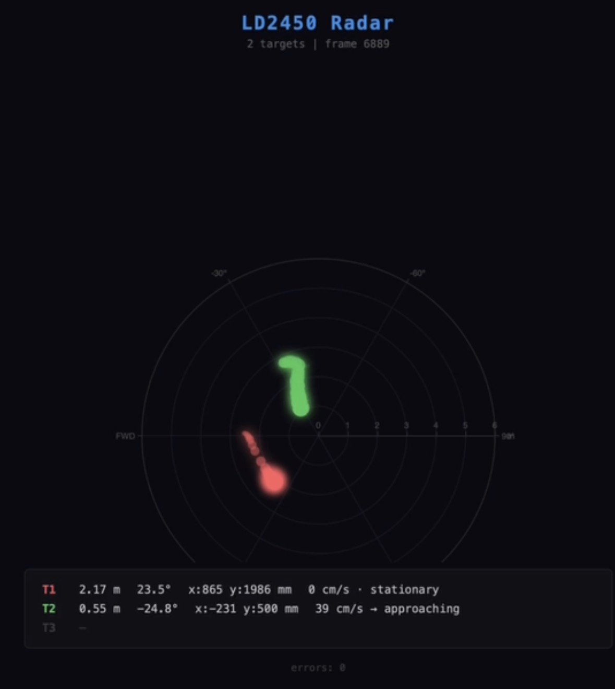
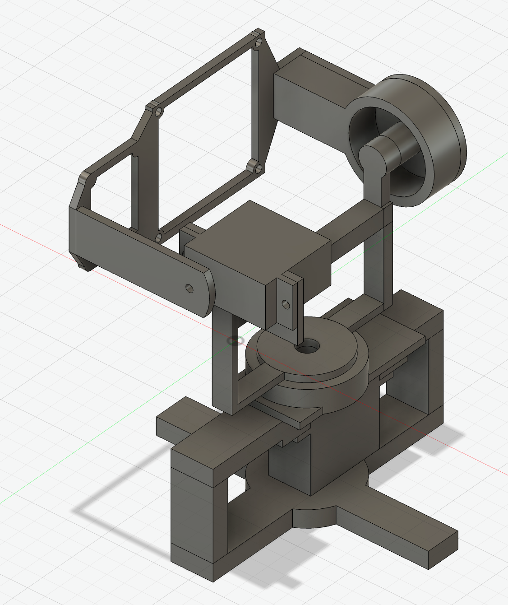
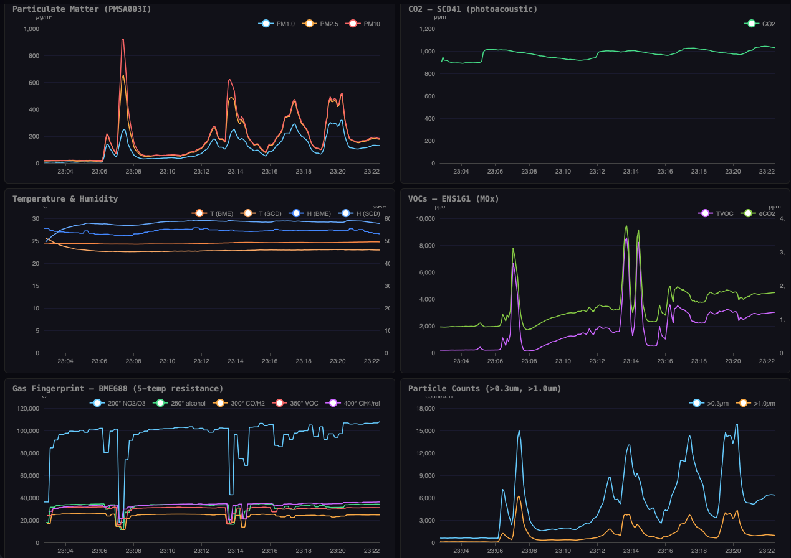
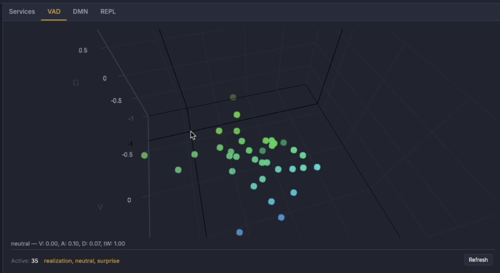
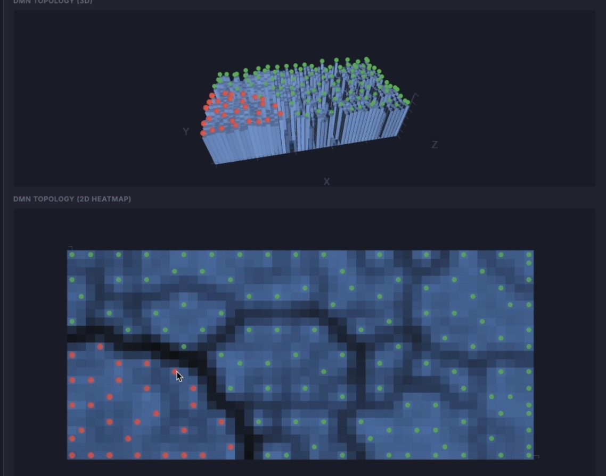

Our research focuses on new foundations for machine intelligence and spans cognitive architectures, perception, and human-machine interaction.

Symbiotic Arc believes in a future where machine intelligence is local, sovereign, and protects the privacy of its human partners. Our research enables privacy-preserving monitoring for homes, care facilities, and independent living. We develop novel sensors and algorithms for home robotics systems and wearables whose data never leaves your home.

Symbiotic Arc is developing a new class of bespoke robotic systems designed for desktop fabrication. We build sensing and actuation platforms using commodity components, 3D printing, and open hardware.

Intelligence isn't just about language. We are developing multi-modal environmental sensing and machine perception that fuses data from diverse sources into coherent environmental awareness. Low-cost sensors can produce rich signals. Our architectures extract actionable information from noisy, complex environments at low cost.

Emotional intelligence is as important, if not more so, than cognitive intelligence. Our systems implement real-time estimation of emotional state for human-machine teaming. We model affect along continuous dimensions using models of actual users, learned in real time using multimodal inputs including voice, language, and physiological signals.
Effective collaboration between humans and machines requires that the machine adapt to the human's cognitive and emotional context. Our systems estimate affective state in real time and use it to modulate interaction, prioritize information, and adjust system behavior.

At the core of our work are new theories and foundations built on topological and geometric approaches for interpretable cognitive architectures. Not language models. We use manifold analysis, category theory, and spectral decomposition to build systems whose internal representations can be inspected, understood, and verified.